Tacoma Camper Storage System.
Developing a compact storage and slide-out concept for a Toyota Tacoma camper conversion, from overall layout to component drawings.
Goal
Plan practical storage and drawer access inside a Toyota Tacoma camper shell.
How I approached it
Model the complete system and break it into drawer boxes, handles, slide members, and detailed component drawings.
Result / status
Complete CAD concept and dimensional documentation; a finished physical build is not documented.

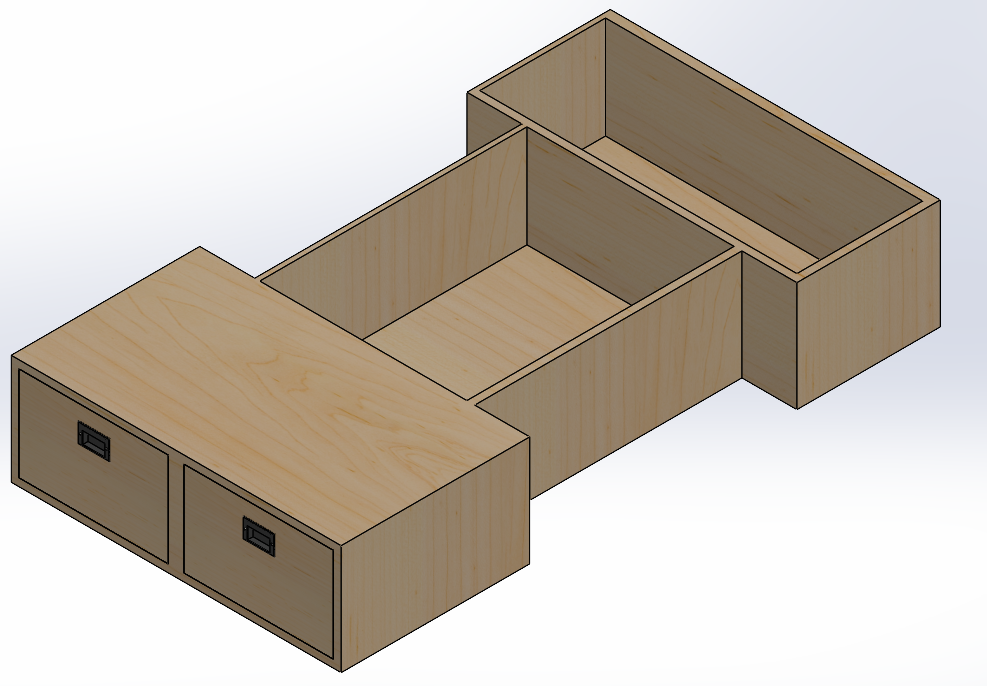
Original project documentation including CAD screenshots, engineering drawings, and prototype photographs. Select an image to inspect it at full size.
Explore the full project gallery ↓Make the most of a tight footprint.
I wanted to design a custom storage system for a Tacoma camper conversion that made the rear area more usable without wasting the limited bed space. Drawer access, compartment organization, and fit inside the shell guided the concept.
Fit and access come first.
The storage modules needed to work as an assembly within the camper shell while leaving workable drawer travel and hardware clearance. Material thickness, attachment points, and how the drawers would be built were considered at the component level.
Model the whole system, then detail every part.
- 01
Built the overall storage assembly and separate compartments in CAD to confirm the intended layout.
- 02
Developed the drawer boxes, recessed handle insert, and multi-piece sliding-rail arrangement.
- 03
Created drawings for the individual components, including dimensional views of the rails, handle, box, and fastener.
- 04
Placed the completed storage model within the Tacoma shell geometry to evaluate the system as a whole.
A thoroughly documented CAD concept.
The deliverable was a complete assembly model plus component-level drawings. The gallery shows the relationship between the final layout and the smaller parts that make it work. Fabrication, installation, and load testing are not claimed.
Detail work is where concepts become buildable.
An attractive system model is only a starting point. Designing attachment hardware, rail spacing, and drawered access revealed how much the practicality depends on individual components.
What I would validate next
Next: validate the assembly in the actual truck bed and build the physical storage modules if the project moves forward.
Design, prototype, and iterate.
The images below document the development process from CAD and documentation to prototype hardware and integrated assemblies.
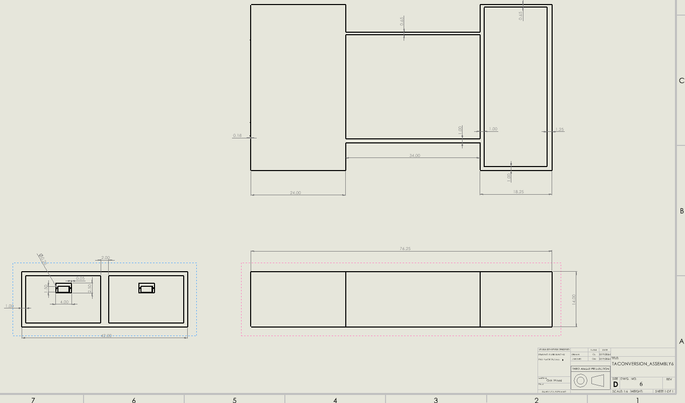
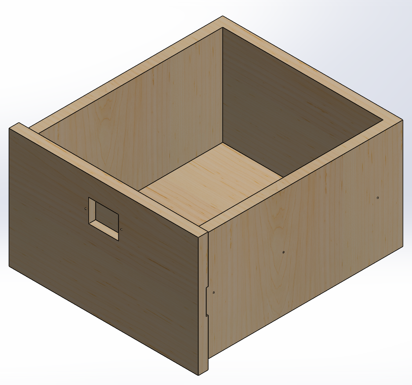
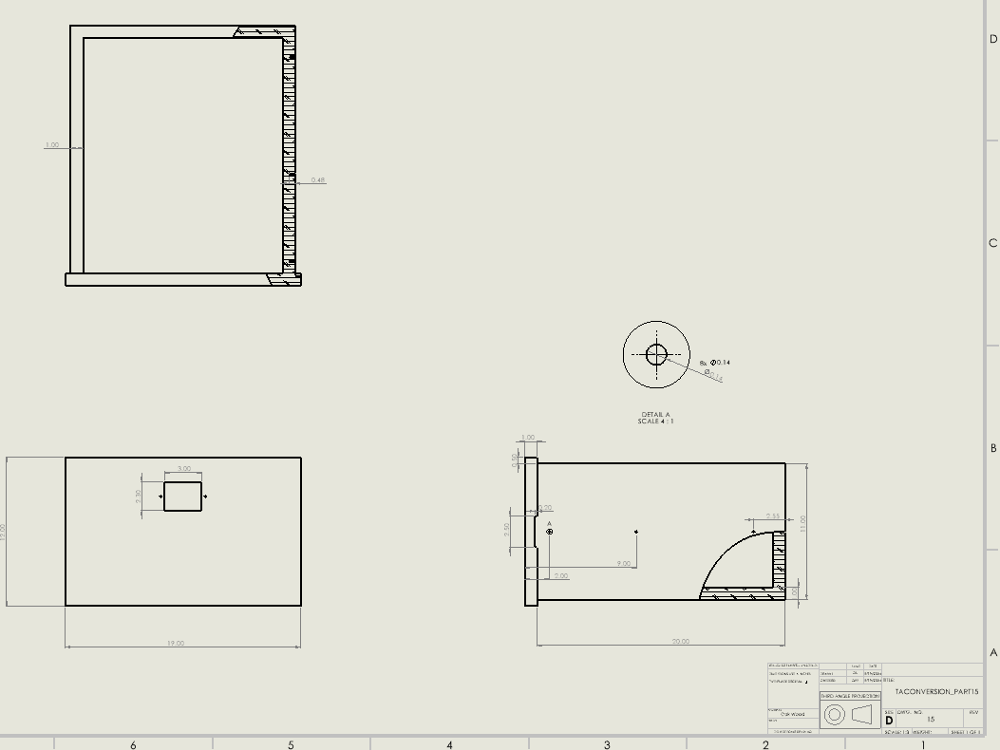
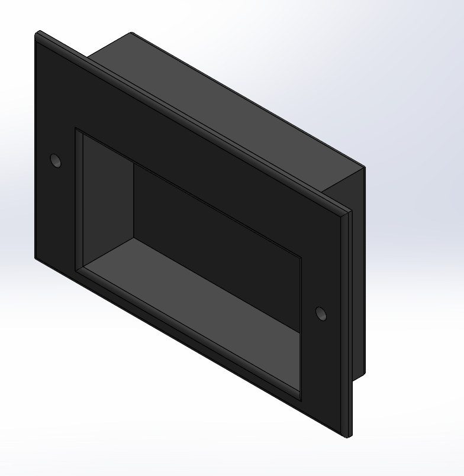
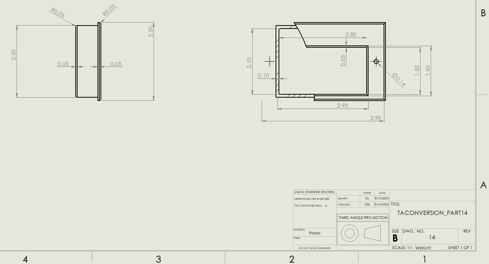
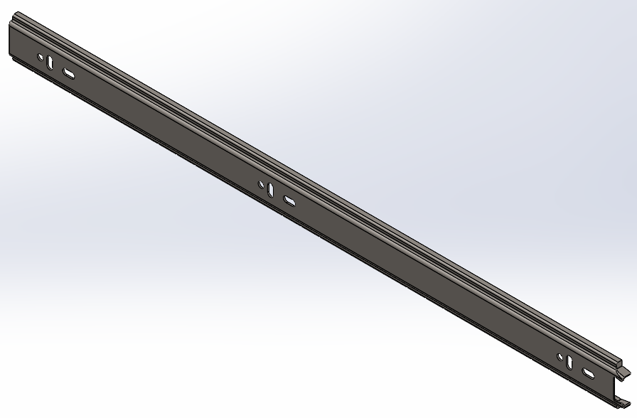
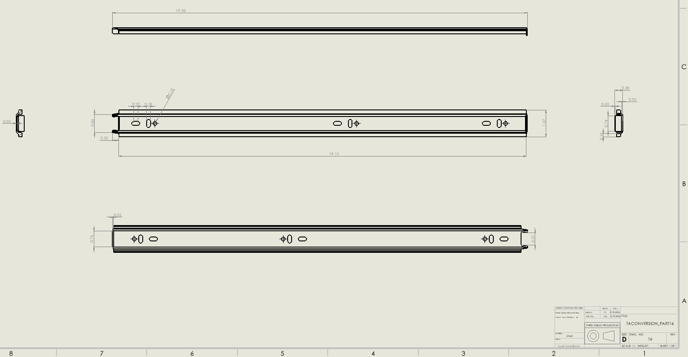
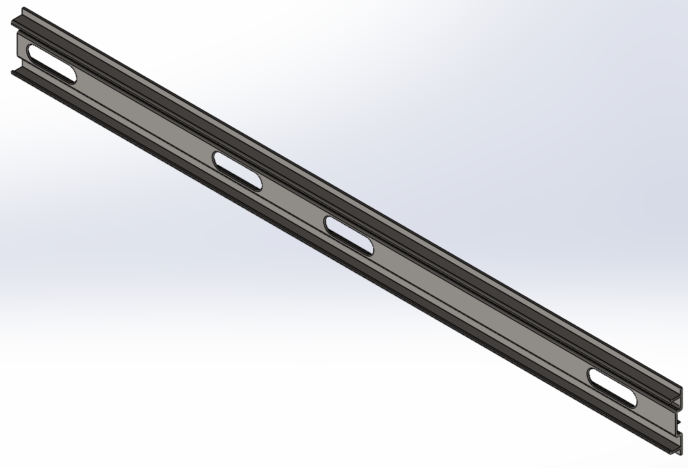
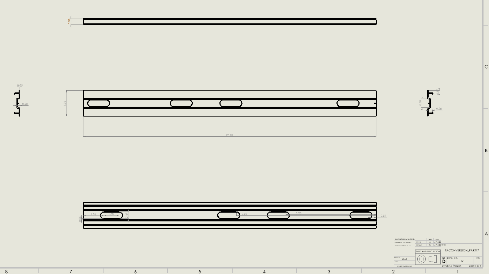
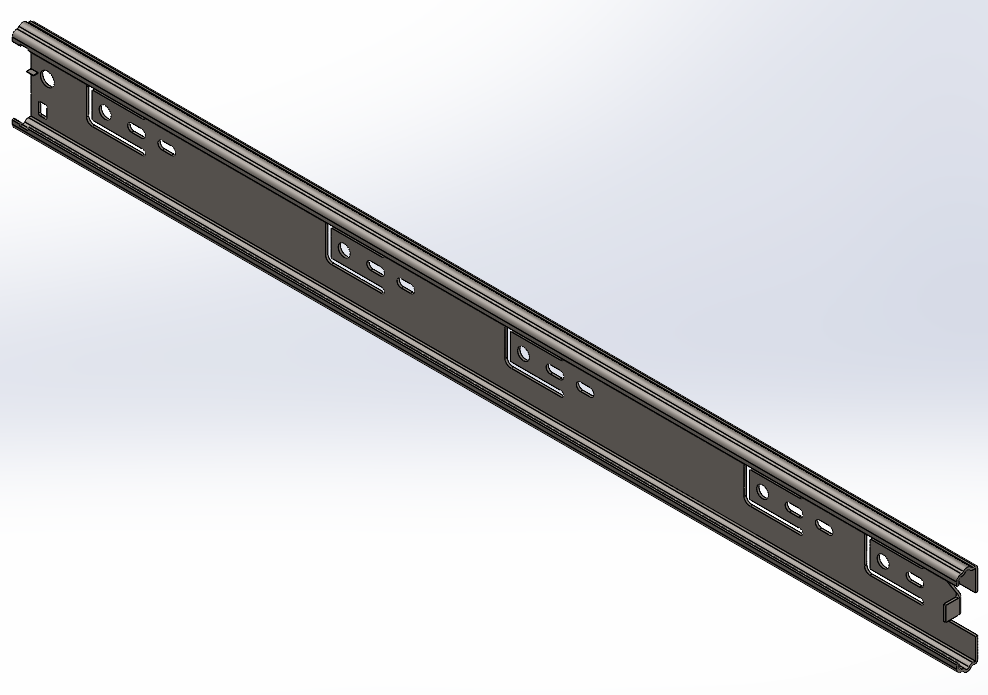
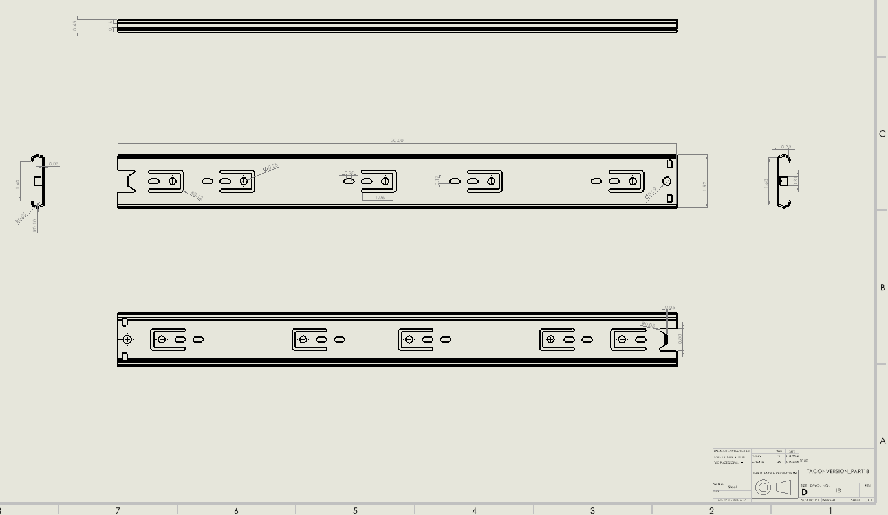
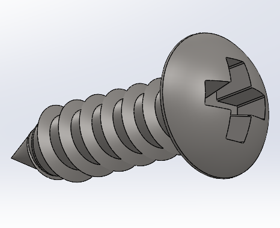
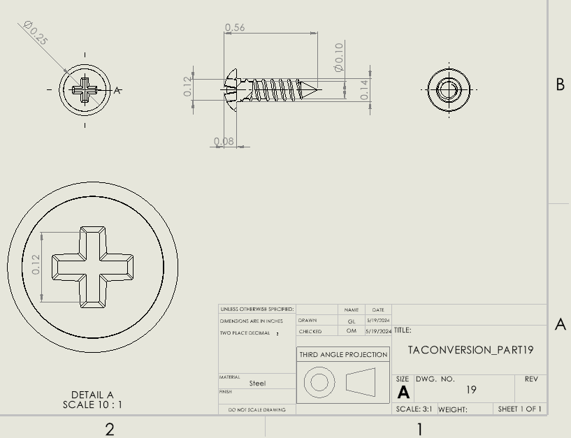